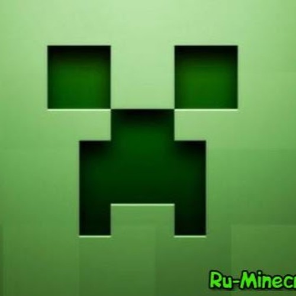
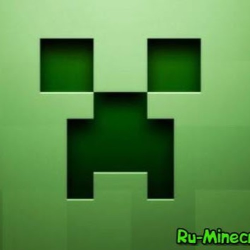
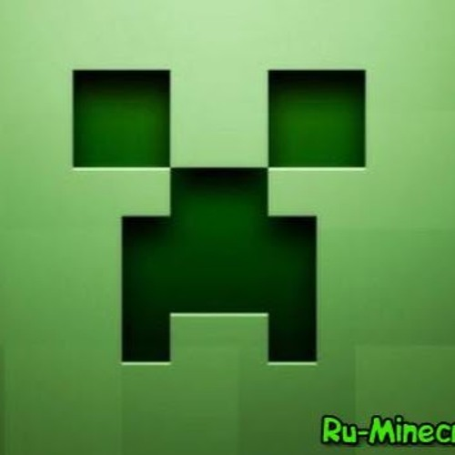

Այստեղ խաղացողը չունի ոչինչ և ինքնուրույն պետք է հայթայթի ու գտնի բոլոր բնական ռեսուրսները (փայտ, քար, երկաթ, ածուխ և այլն)։ Այս բոլորը խաղացողին պետք են գալու հետագայում խաղի մեջ։ Կախված խաղի բարդությունից` խաղի գիշերային ժամերին և այն տարածքներում որտեղ ամբողջովին խավար է, հայտնվելու են տարբեր տիպի հրեշներ՝ զոմբիներ, սարդեր, կմախքներ նետ ու աղեղով և այլն։ Այս ռեժիմում կա նաև կյանքի սանդղակ, որը կարող է իջնել, երբ քո վրա հարձակվում են հրեշները, կամ դու ընկնում ես ջրի մեջ և երկար ես մնում այնտեղ (այդ դեպքում դու խեղդվում ես), կամ էլ ընկնում ես լավայի մեջ։ Ինչպես նաև համակարգչային տարբերակում խաղացողն ունի ուտելիքի սանդղակ, որը քիչ-քիչ ընկնում է, և խաղացողը պետք է երբեմն ինչ-որ բան ուտի։ Կյանքերը վերականգնվում են, երբ խաղացողը լիարժեք սնված է, կամ էլ այն կարող է ինքնուրույն վերականգնվել, եթե դու խաղում ես «Խաղաղ» բարդության ժամանակ։

| mob | food | stones | person |
| zombie | bread | bedrock | Steve |
| creeper | apple | obsidian | Alex |
| spider | meat | diamond | noob |
| drakon | villager | ender stone | ender man |